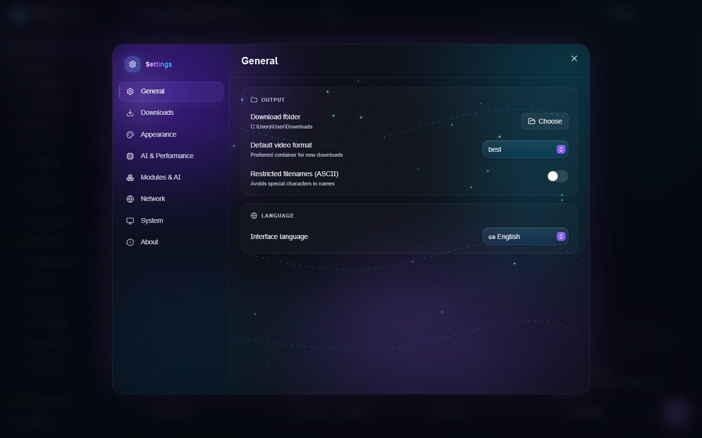
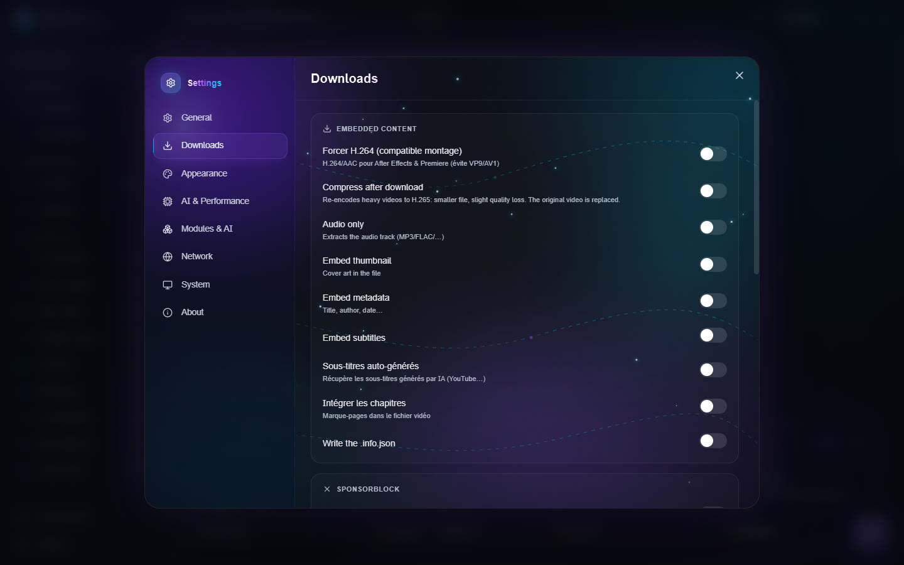
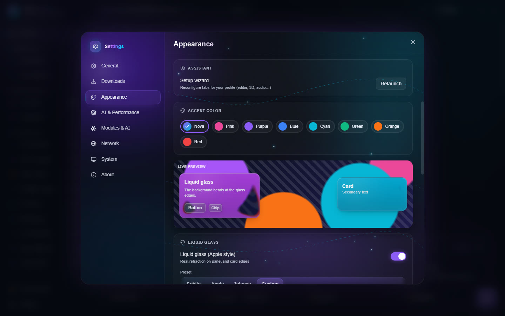
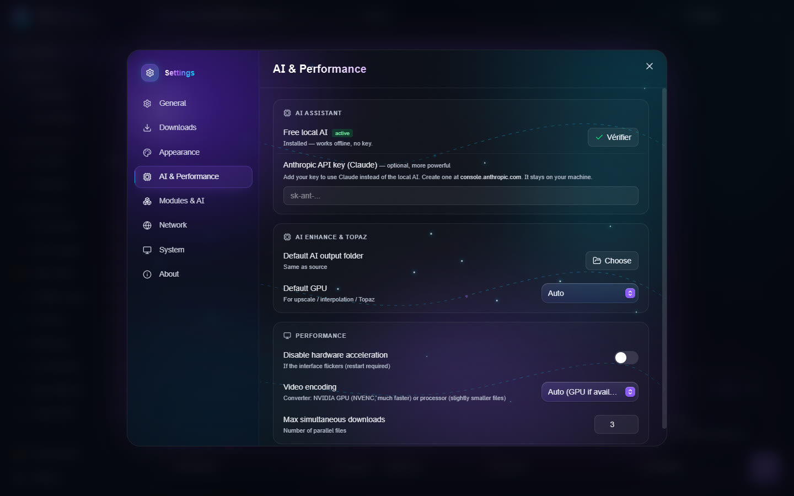
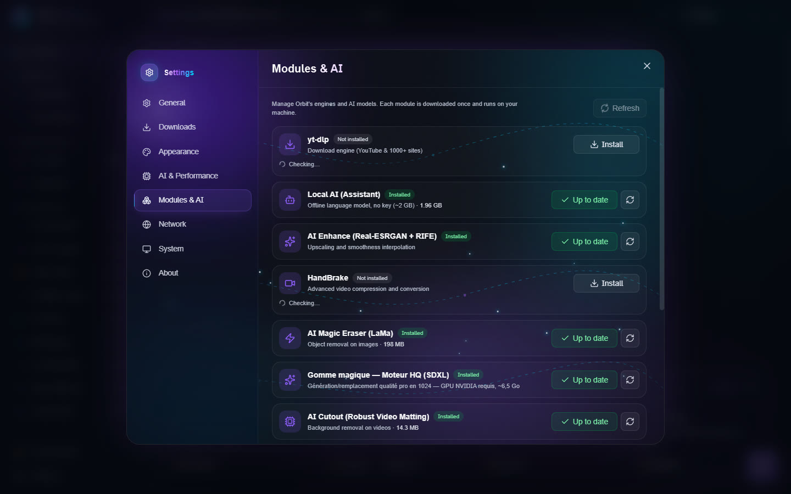
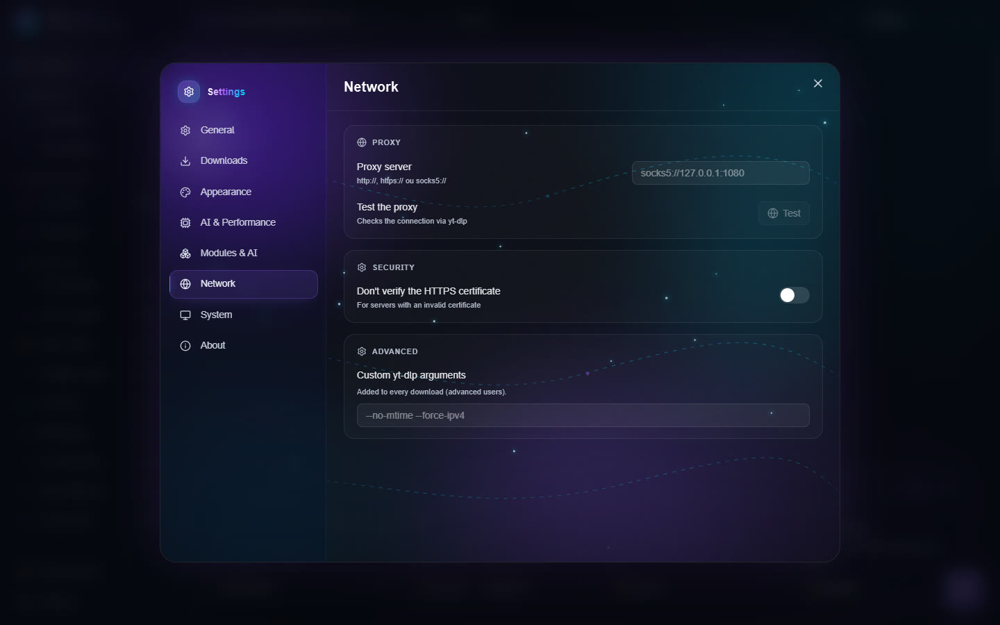
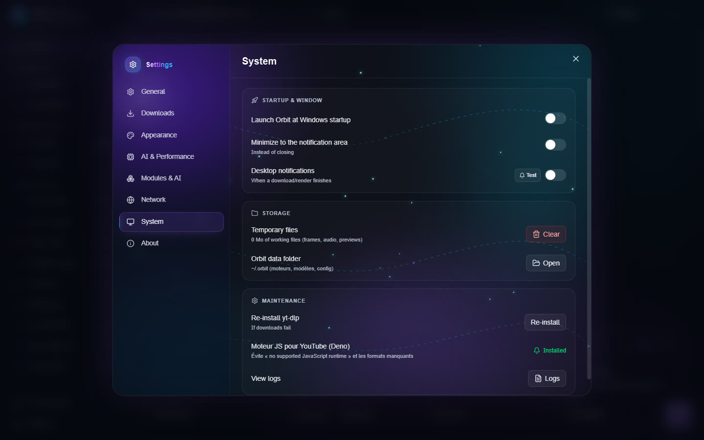
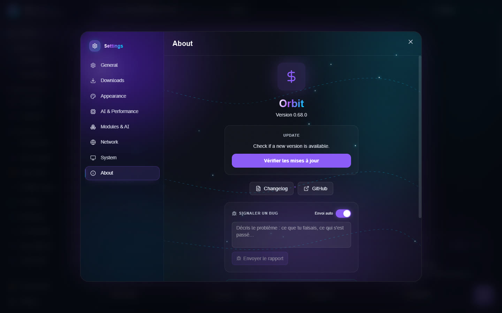

Settings
Open the settings with Settings, at the bottom of the sidebar. The pages are listed on the left.
General


- Output: Download folder, Default video format, Restricted filenames (ASCII) (avoids special characters in names).
- Language: the interface language (English, French, Spanish, German, Italian, Portuguese).
Downloads


Embedded content:
- Force H.264 (editing-friendly): H.264/AAC for After Effects and Premiere, instead of VP9 or AV1;
- Compress after download;
- Audio only: keep only the sound (MP3, FLAC…);
- Embed thumbnail (cover), Embed metadata (title, author, date), Embed subtitles, chapters;
- auto-generated subtitles and subtitle languages (comma-separated codes, for example
fr.*,en.*); - Write the .info.json;
- Mark sponsor segments (SponsorBlock chapters) or Remove sponsors (cuts intro, ads…).
Behavior:
- Download archive: never download again what was already downloaded;
- Ignore errors: keep going in a playlist when one video fails;
- Keep the original timestamp, No .part files;
- Concurrent fragments: speeds up HLS and DASH streams;
- Simultaneous AI jobs (GPU): how many AI tools use the graphics card at the same time. 1 (a queue) is recommended;
- Maximum VRAM for AI: a video memory cap for the AI engines, from 1 GB to the size of your card, or Unlimited. Useful to keep room for a game or another program;
- Speed limit: for example
5Mor800k(empty = unlimited); - Windows right-click menu: adds "Orbit ▸ Compress / Crop…" to the right-click menu of a file.
Authentication: Browser cookies, for content that needs a login.
Appearance


- Theme: Nova, Graphite, Black, White, Midnight, or System (follows Windows' light/dark mode).
- Setup wizard: Relaunch to rearrange the tabs for your profile.
- Accent color.
- Liquid glass (Apple style): real refraction on the edge of panels and cards. Presets Subtle, Apple, Intense or Custom, then fine settings: refraction, prism effect, glass blur, tint, highlights, mouse-following glare, drop shadow. A live preview shows the result.
- Wallpaper: an image behind the glass, with its blur and dimming; Tool page blur and Text shadow keep text readable.
- Brighter text: lightens the secondary grey texts.
- Reset puts every glass, background and text setting back to default.
- Interface sounds: small clicks on press.
AI & Performance


- AI Assistant: Free local AI (about 2 GB, downloaded once, works offline) or your Anthropic API key (Claude), more powerful. The key stays on your PC.
- AI Enhance & Topaz: Default AI output folder and Default GPU for upscale, interpolation and Topaz.
- Performance:
- Disable hardware acceleration if the interface flickers (restart needed);
- Video encoding for the Converter: Auto (GPU if available), NVIDIA GPU (NVENC) or Processor (CPU);
- Max simultaneous downloads.
Modules & AI


The list of every Orbit engine and model (yt-dlp, ffmpeg, local AI, Real-ESRGAN, RIFE, HandBrake, Magic Eraser, Cutout, Audio Studio, AI 3D Creation…), with its size and state. Install, update or remove each one in a click; Refresh checks them all.
Network


- Proxy server and Test the proxy (checks the connection through yt-dlp).
- Security: Don't verify the HTTPS certificate (for servers with an invalid certificate; avoid unless needed).
- Advanced: Custom yt-dlp arguments, added to every download.
System


- Startup & window: start Orbit with Windows, minimize to the notification area instead of closing, notifications when a download or a render finishes.
- Storage: Temporary files (size of the work files, Clear button) and Orbit data folder (Open).
- Maintenance: Re-install yt-dlp if downloads fail; the JS engine for YouTube (Deno), which avoids the "no supported JavaScript runtime" error and missing formats; View logs.
About


- Version and the update check.
- Bug report: describe the problem and send the report. Automatic sending also sends errors on its own (without your files or your user name).
- Privacy: no tracking and no usage statistics; your statistics stay on your device.